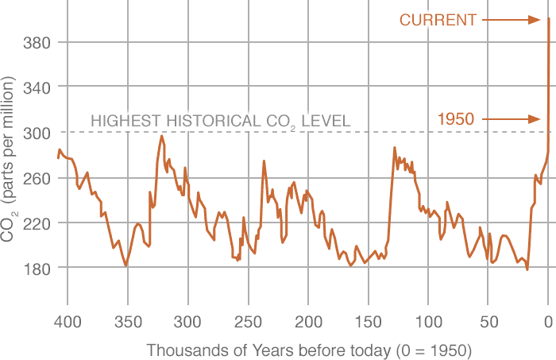

Climate Change is a massive threat that may severely damage the planet and will negatively impact a large number of people. Here are some interesting facts about this massive threat: Carbon emissions have increased by almost 50% since 1990 - emissions grew more quickly between 2000 and 2010 than in each of the three preivious decades. This is one of the biggest issues that will face the younger generation, and the younger generation must be made aware about this massive problem. This is the puspose of this site. How can you help? There are a few ways everyone can help. One way to do this is simply by raising awareness about this issue. There are also several more everyday things you can do, such as carpooling and trying to recycle more often. In conslusion, there is a little everyone can do to help.
Most of my information for this project comes from the UN site on sustainability goal 13: Protecting Life Underwater. Although the arguement could be made that this is a secondary source, it was used as primary source in this project. Link: https://www.unenvironment.org/explore-topics/sustainable-development-goals/why-do-sustainable-development-goals-matter/goal-13 I also used a few secondary sources, such as Climate Atlas. Link: https://climateatlas.ca/climate-change-basics I also used the following site, called Clean, as a source. Link: https://clean.ns.ca/programs/youth-engagement/talking-climate-change-with-kids/climate-change-background-info/